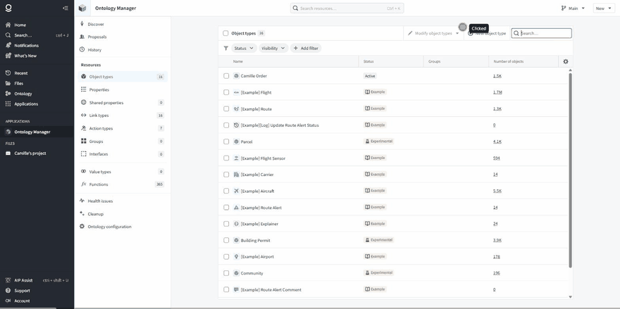
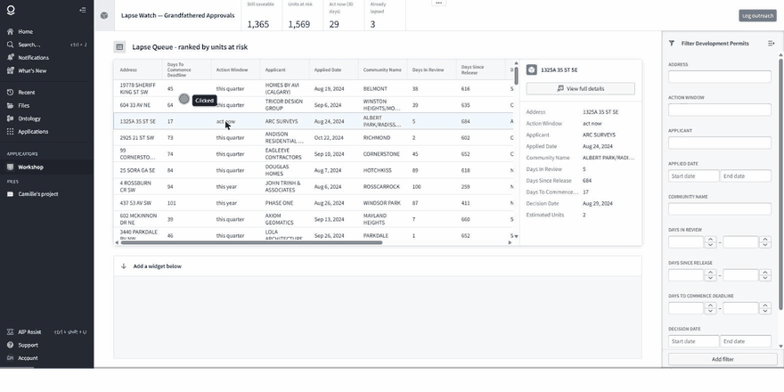
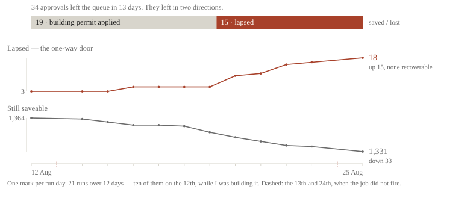
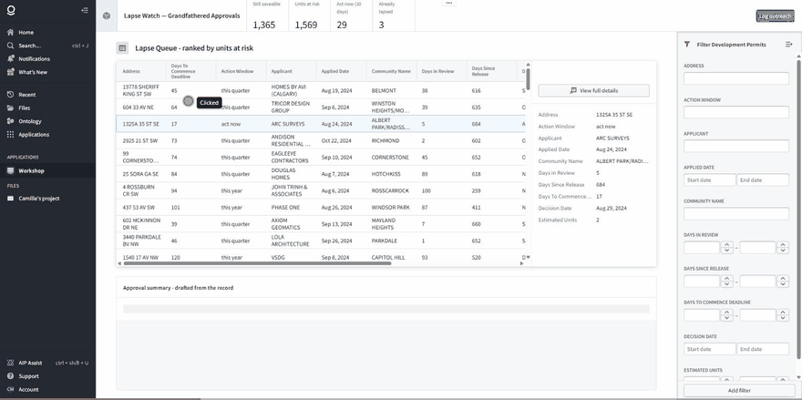

What I Built, and What Broke (and How to sorta fix it)
Lapse Watch: a Palantir Foundry deployment on Calgary's rezoning repeal
Calgary's blanket rezoning bylaw was repealed (effective) 4 August 2026. Parcels approved before the repeal keep their density rights only until a commencement deadline passes. That is a countdown on (at time of) around, 1,371 parcels. The deadline is derivable (2+ years from commencement of permit).
I wanted to honestly take a peek at the data to get a glimpse into whether the rezoning had worked, whether permit data could find anything cool (short for conclusive or causitive), for data I had four City tables that only mean anything in relation to each other. You could put this data into pretty much anything and get something out of it, not wanting to brute force python and wanting to learn something new (EmployableTM) So I decided to try out a company I have heard more in regards to controversies than boring production releases: Palantir! Specifically their Foundry and Ontology suite. This is what I built over about one to two weeks, and what it cost me to get wrong.
What I Built
The pipeline (Non Oil Variety)
I had around, 2,312 lines of Python across 15 modules. Incremental ingestion from four City of Calgary Socrata tables into a cached raw layer, keyed on :updated_at, with the watermark read before the fetch and idempotent upserts on permit number. A full pull takes about 60 seconds and a delta about 14.
Every run, it snapshots the cache, validates, and rolls back on failure, tests itself on four modules: an error page, a truncated response, a column disappearing upstream, and a healthy pull.With one documented exemption for a table that legitimately shrinks between pulls! It self runs unattended at 07:00 and writes three artifacts: stdout, one row per run, and one row per permit that entered the queue, left it, or lapsed.
The ontology
This is the backbone of Palantirs real sell, an operational web above the data you can play around in and LLMS play nice with. Overall, it's... good? it probably doesn't beat an in-house version of the same kind of system, but it was nice to organize things in. In total I got around, 4 object types with 12,829 objects, Development Permit (4,607), Parcel (4,139), Building Permit (3,887), Community (196), each with an explicit primary key and title property, joined by three many-to-one link types. The domain logic was in the derived fields: is_grandfathered, is_lapsed, is_ground_oriented_infill, days_to_commence_deadline, km_from_core. The commence deadline is decision date plus two years. (how conveinent that the City Of Calgary made this so formulaic!)

Edit-only rows with no backing column.The writeback Action is Modify-only, with no create and no delete, because an operator working this queue annotates a public record rather than authoring one, I found this opertionally quite neat, I used to work at a place with Rippling (one of it's first deployements in Canada) and gating off knowledge access and knowledge control was weirder than it had to be, being able to organizationally set certain attributes is nice! I started with twenty-six parameters and shipped with three. Status is a five-value enum with "Other" disallowed, since a free-text status cannot be counted. The outreach properties are edit-only: they live in the ontology's edit store rather than the backing dataset, which is why the object type still reports every column mapped. Edit history is enabled with store all properties, without which the audit trail does not render at all.
The application
Lapse Watch is built as a queue (tool) rather than a dashboard. The object set is filtered to the actionable population and sorted descending on a derived risk score, so the screen ranks by units at risk instead of by days remaining. The four header metrics are live object-set aggregations, and they are deliberately rooted differently: three compose on the filtered variable and the fourth on the raw object type, because the queue excludes lapsed rows by design. Foundry's ontology filter and the pandas computation agree on the actionable population to the row, at 1,365.

The upload client
Endpoints were probed rather than assumed, and three assumptions were wrong. The dangerous one: the catalog endpoint accepts transactionType: SNAPSHOT, silently ignores it, and returns an APPEND. Committing that stacks a second copy of 4,607 rows under a live ontology — not an error, just a doubled queue. The client uses the v2 endpoint, re-reads the transaction type off the response, and refuses to upload if it is anything but a snapshot.
resp = client.open_transaction(dataset, type="SNAPSHOT")
if resp["transactionType"] != "SNAPSHOT":
raise TransactionTypeMismatch(resp["transactionType"])Datasets resolve by path rather than RID, and the token comes from a git-ignored file with no CLI flag to pass one, because a credential on a command line is a credential in shell history.
What Broke
Three other things went wrong before that one.
The first delta key was applieddate, which looks correct and is not. On 12 August the City changed fourteen permit statuses without a single new application arriving, so the job fetched nothing, wrote nothing, and exited 0. A clean run and an empty run were indistinguishable.
The unattended fetch originally wrote whatever the API returned straight over the cache. That is fine every morning except the morning the endpoint returns an HTML error page, and that error page become the single sole source of truth apparently and the job still exits 0.
"Now" was hardcoded in four files, sloppy, since I was just running it by hand it was fine but as soon as I put it on a schedule, it emits an identical countdown every morning indefinitely, behind a green check.
And the transaction type above, which reports success and hands back the opposite of what was requested.
I got four bugs, one shape: in every case the system reported success while being wrong. Which in the new LLMs exist everywhere world and trust the information you give them as context is quite scary! The fix in every case was the same, which was to stop trusting the exit code and record what actually happened. That is why the pipeline writes an event log and not just counts.
What That Changed in the Analysis
I got an interesting and I'll say, good looking tool, Palantir definitely has a bit more aesthetics than PowerBI, and I am happier to show someone this. The permit data has the same defect. A permit system records that an application was decided and approved, and approval is its terminal state. It cannot distinguish a permit that became a building from one that expired in a drawer.

Over twenty-one runs across twelve days the saveable pool fell from 1,364 to 1,331 and the lapsed count rose from 3 to 18. The pool shrank by 33, a single number moving in one direction, concealing that more than half the movement was good news. It reconciles: fifteen COMMENCE_WINDOW_CLOSED transitions against a lapsed count that moved 3 → 18, and 34 departures less one arrival against 1,364 → 1,331, written by different parts of the code.
The same discipline found the refusal mechanism. A field recording which path an application takes under the Land Use Bylaw had been carried through every run and read by nothing. Applications requiring a dimensional relaxation are refused at 54.5% against a 13% base rate, and across 83 communities that share correlates with the community refusal rate at 0.795. It is a correlation and not a cause. Two of my own hypotheses died on the way: that the City's commencement date evidenced stalls already underway (3 of 4,607 had passed it), and that northeast approvals were paper legalisations of existing suites (1.0% reference one). A denominator error overstated one headline figure by sixteen points before it was caught.
The Function That Declines
Having been fooled four times by components that reported success, the one I wrote from scratch is built to refuse. summariseApprovalHistory is an AIP Logic function bound to the ontology and wired into the application as a function-backed variable on the selected row, generating one factual sentence a planner could paste into a file note.

It takes nine named properties rather than the object, because the object carries thirty and three of them are the operator's own outreach notes; hand it everything and it summarises its own prior output back into the record. The prompt drops a clause rather than guess when a value is null, and visibly does — asked about a parcel whose land use reverted under the repeal, it reports the designation the parcel holds and stops, because there is no column for what it reverted to. The output is pasted into a public record, so the guard is load-bearing.
Limits
Unit counts are estimates with conservative lower bounds; the hard number is 1,371 parcels.505 of the 1,365 actionable permits carry no applicant, so for 37% of the queue the Action records a file note rather than a call. An operator working top-down hits one inside the first ten rows. The published figures are pinned to the state on 12 August so that every number here refers to one reproducible snapshot rather than to whatever the pipeline last wrote.The pin, its md5, and the procedure for lifting it are in data/published/MANIFEST.md. The local job keeps running regardless: as of the 25th it reports 1,331 saveable and 18 lapsed.
An ontology models paperwork well and relationships badly. It holds Development Permit → Parcel → Community. It does not hold which lenders will underwrite a rowhouse, which is the variable that decides whether any of this gets built.
The deployment runs on a Foundry developer-tier stack. Access is gated on organisation membership, so the link cannot be shared; the recordings above are the artefact, and I am happy to screen-share the running application. (Not being able to share, even a plain, aggregate version openly does suck)